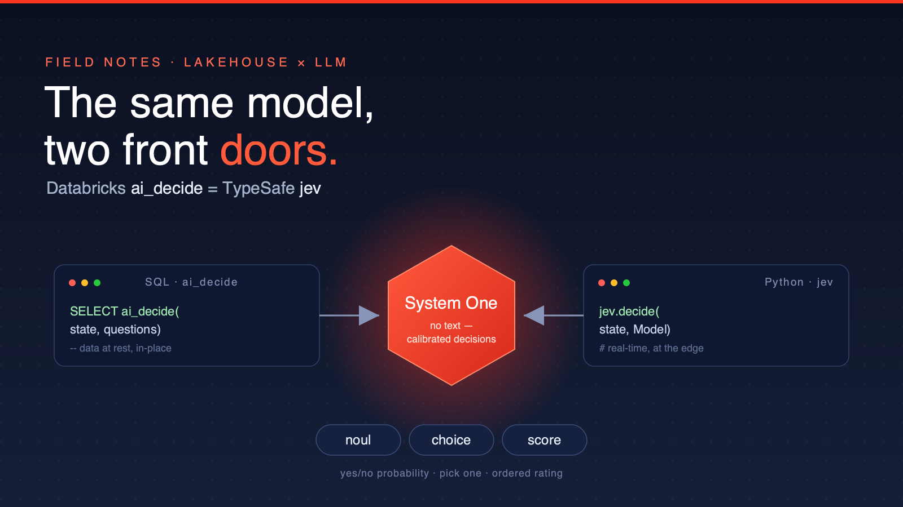
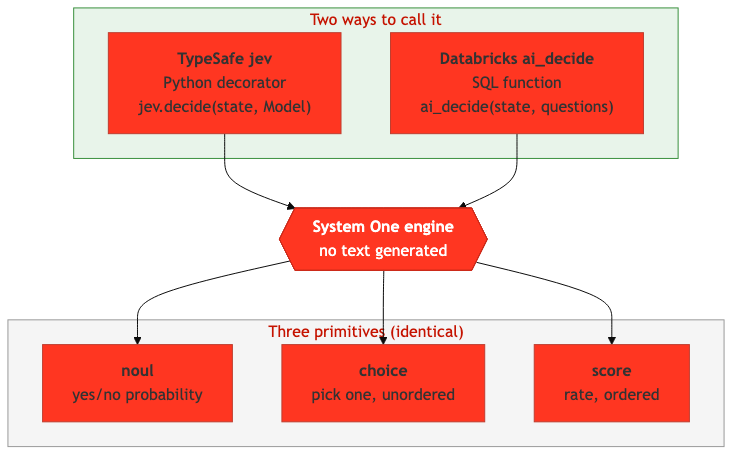
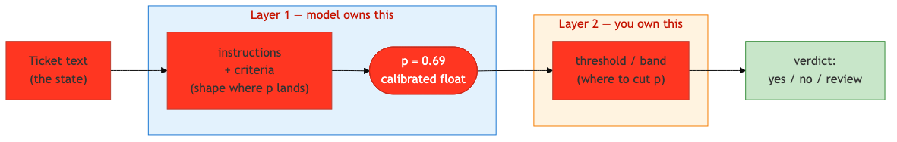
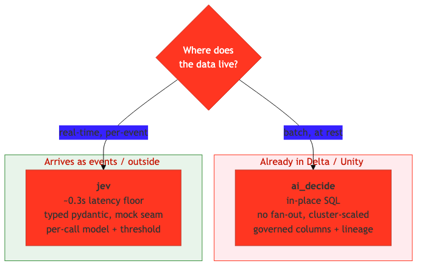
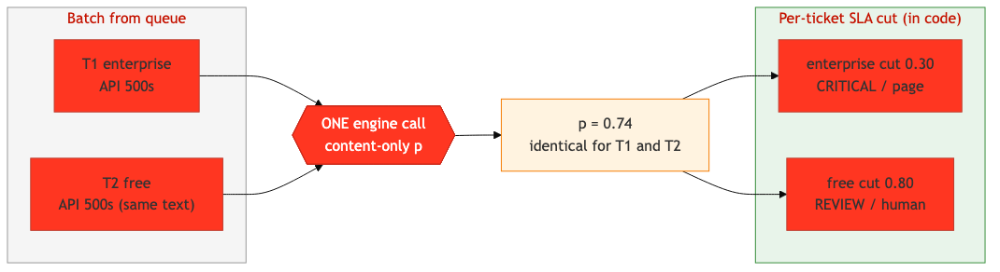

ai_decide and TypeSafe's jev Are the Same Model — Here's When to Use WhichI ran the identical classification spec through both. The answers matched. The question that remains isn't "which is smarter" — it's "where does your data live?"

I was evaluating TypeSafe's jev — a neat little Python library that turns a function signature into a structured LLM decision. No prompt strings, no JSON schema to babysit: you declare a Pydantic return model, and each field becomes a typed question. The model answers with calibrated probabilities and generates no free text at all.
Then I opened the Databricks SQL docs for ai_decide and did a double take. Same three question types. Same request shape. Same response fields.
They are the same engine — TypeSafe's "System One" model — exposed two ways: a Python SDK (jev) and a SQL function (ai_decide).

jev and ai_decide are two front doors to the same System One engine. The three primitives — noul, choice, score — are identical.
So the interesting question was never "which gives better answers." I measured that too (they agree). The real decision is operational: latency, scale, cost, and above all — where your data already lives.
| Section | For whom | Time |
|---|---|---|
| The 2-minute summary | Executives, architects | 2 min |
| How the model actually works | Developers | 6 min |
| The benchmark: do they agree? | Developers, data teams | 4 min |
| The deciding factor: data gravity | Architects | 3 min |
| Worked example: SLA-aware routing | Developers | 5 min |
You do not have to choose a different model for Python apps vs. your lakehouse. It's one model, two interfaces:
ai_decide is a SQL function. If your data is already in Delta / Unity Catalog, you classify it in place — no export, no new service, results land as governed columns.jev is a Python library. If decisions happen on a live request path (a queue consumer, a webhook, an app), it gives you sub-second latency and typed objects.Without this insight: teams stand up a separate inference service, export data to it, and reconcile two "AI vendors."
With it: one engine, picked by delivery context. Batch at rest → ai_decide. Real-time at the edge → jev. Same semantics, so a hybrid is safe.
Executive action item: if you're already on Databricks, your structured-decision workloads over tables need no new infrastructure — it's a SQL function.
The whole model is three primitives. Every decision field is one of them:
p ∈ [0,1]. No separate confidence; p is the certainty.The subtle part is the noul, and it's where most of the "why did it decide that?" confusion lives. There are two layers, owned by two different parties:

The model owns wherep lands (shaped only by your wording). You own where to cut p into a verdict.
Layer 1 — the model emits p. You can't dial a confidence number. You influence p only through the question's instructions and criteria: a sharp, concrete question pushes p toward 0 or 1; a vague one leaves it near 0.5.
Layer 2 — you cut p. A single threshold turns p into a bool. A band turns it into three outcomes — and this is the pattern worth stealing:
def verdict(p, yes=0.8, no=0.2):
if p >= yes: return "yes" # confident
if p <= no: return "no" # confident
return "review" # uncertain -> route to a human
That's it. The model gives you a calibrated float; you decide the policy.
Here's the same decision expressed both ways. In jev, the Pydantic model is the schema:
from typing import Literal
from pydantic import BaseModel, Field
import jev
class Triage(BaseModel):
department: Literal["billing", "technical", "sales"]
is_urgent: bool
severity: int = Field(ge=1, le=5)
triage = jev.decide("I was charged twice and want a refund!", Triage)
In ai_decide, the questions are JSON and the answer is a VARIANT column:
SELECT ai_decide(
'I was charged twice and want a refund!',
'{
"department": {"type": "choice", "instructions": "Which team?",
"criteria": {"billing": "Payments", "technical": "Bugs", "sales": "Pricing"}},
"is_urgent": {"type": "noul", "instructions": "Needs a fast response?"},
"severity": {"type": "score", "instructions": "Rate severity",
"criteria": ["Trivial","Minor","Moderate","Serious","Critical"]}
}'
) AS decision;
Same questions, same answers — one returns a typed object, the other a column.
I built one neutral spec and ran it through both engines — six long-form support tickets, six questions each (2 choice, 2 noul, 2 score).
Exact agreement: 25/36 (69%). But that headline undersells it:
category 6/6, requires_human 6/6.is_urgent. On borderline tickets (an account lockout, a sales inquiry, a GDPR request) ai_decide returned ~0.80–0.99 while jev returned ~0.20–0.29.That gap is not a bug or a capability difference. It's calibration: ai_decide ran hotter on urgency, jev more conservative. And jev's 0.20–0.29 values sit squarely in the "route to human review" band — the model honestly signalling uncertain. The fix is threshold tuning, not treating one engine as wrong.
Takeaway: pick on delivery, not accuracy. On the substance, they're the same model.

The single most useful question: where is the data right now?ai_decideIf the rows are in a Delta table, ai_decide is almost always right:
jevIf content arrives as events and you act now: jev's ~0.3s per-call latency beats a warehouse spin-up, and you get typed Pydantic objects, a mock seam for tests, and per-call control of model and threshold.
On a small serverless warehouse (one noul), measured end-to-end:
ai_decide: ≈ 6s fixed + 0.52s/row (~1.9 rows/s on this small warehouse).jev: ≈ 0.3s per call, ~0.09s/item batched (~11 rows/s).On this warehouse, jev was faster at every batch size from 1 to 100,000 — no crossover. But read that carefully: ai_decide is distributed, so its per-row cost drops ~linearly with cluster width. The crossover is 0.52s / parallelism < 0.09s — ai_decide wins once the cluster is ~6×+ wider and the batch is large enough to amortize the fixed cost. Meanwhile jev's flat rate is bounded by API concurrency, rate limits, and payload caps at sustained volume.
So: latency → jev. Raw throughput over data at rest, on a sized cluster → ai_decide.
Here's where it gets practical. Support tickets arrive from a message queue. The same ticket text should be more critical for an enterprise customer than a free one. How do you encode that without re-querying the model per tier?

The model judges content only (one call). SLA is applied as a per-ticket threshold in code.The trick: keep the model SLA-blind. It emits one content-only probability per ticket. The SLA selects the cut point — in code, after the call:
SLA_CUTS = { # (critical_at, review_at)
"enterprise": (0.30, 0.15), # strict SLA: escalate readily
"business": (0.50, 0.30),
"free": (0.80, 0.50), # only strong signals page anyone
}
def route(sla, p):
crit, review = SLA_CUTS[sla]
if p >= crit: return "CRITICAL -> page on-call"
if p >= review: return "REVIEW -> human queue"
return "ROUTINE -> auto-ack / backlog"
Two identical tickets, different SLA → identical p, different route. I verified this live on both engines: jev and ai_decide returned the same probability for the duplicated ticket, and the SLA cut did the rest.
Why put SLA at the cut and not in the prompt?
p shifts opaquely, the same text scores differently, and it's hard to audit.p stays content-only and reusable, criticality is a deterministic business rule you can change without re-querying, and it's auditable.Bonus: because p is SLA-blind, you query once and can re-threshold for any tier — or add a new tier — with zero extra model calls. That matters when you're paying per call and running a high-volume queue.
Path 1 — offline (no API, 2 min). The example repo ships a keyword-heuristic stub so you can see the routing logic without spending anything:
git clone https://github.com/LaurentPRAT-DB/Jev_test1.git
cd Jev_test1/examples/sla_queue
python run.py # stub backend, no credit
python -m pytest test_router.py -q
Path 2 — live jev (1 batched call). Set TYPESAFE_API_KEY, then python run.py --engine jev.
Path 3 — live ai_decide. On Databricks (DBR 15.4+), python run.py --engine ai_decide against your SQL warehouse profile.
"The noul is always 1 or 0." No — the engine returns a continuous float. 1/0 only appears after you threshold it. Keep it raw and it stays 0.69.
"jev.decide(bool_threshold=…) gives per-question cuts." It doesn't — it's one global value for every bool field in the call. For per-question cuts, read the raw probabilities and threshold each field yourself.
"str fields in my model." Rejected at decoration time. The model generates no text, so fields must be bool, Literal/Enum, or int/float with Field(ge=…, le=…).
Tables in Medium. (Meta-gotcha for this article.) Medium renders markdown tables as plain text — convert to bullet lists before importing.
jev on PyPI: https://pypi.org/project/jev/ai_decide docs: https://docs.databricks.com/aws/en/sql/language-manual/functions/ai_decideI work in field engineering at Databricks, where I spend a lot of time at the seam between the lakehouse and the application layer. This piece came out of a genuine "wait, these are the same thing?" moment — and the realization that the right answer usually comes down to where the data already lives.
Did this help? Give it a clap and follow for more field notes from the lakehouse.
Tags: #Databricks #LLM #DataEngineering #MachineLearning #AI